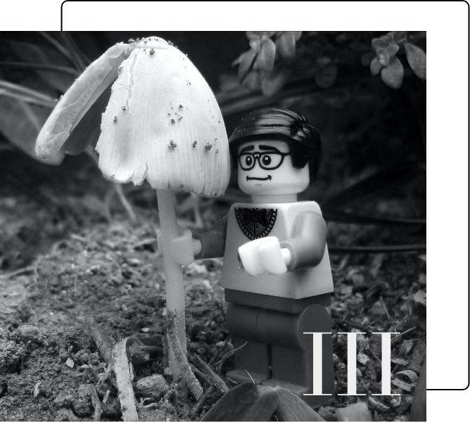

Consists of a series of 3 websites designed and coded with the
knowledge accumulated during the "Basic Web" theme of the first
semester at Multimedia Design.
Basic UX
Data Collection, Prototyping and Design Sprint.
II

Basic Animation
We have learned a new programming language: javascript, through
designing of a clicker game.
BASIC CONTENT
Encompasses most of the previous 3 themes, with a focus on video
production.